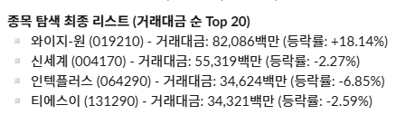
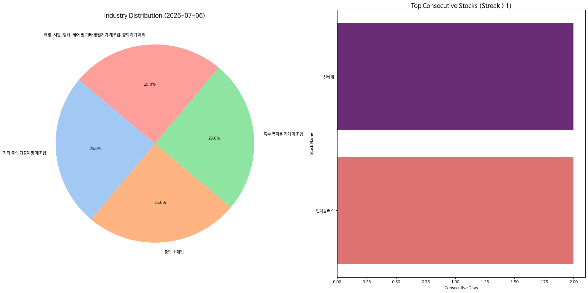

매일의 주도주 정리를 위해 기록합니다.
연속적으로 나온 종목들 또는 상승 후 조정받는 종목 위주로 리서치 해보시면 좋을 것 같습니다.

*오늘의 퀀트픽으로는 '와이지-원' 입니다.
▶ 국내 대표 절삭공구 기업
▶ 텅스텐 가격 상승 타고 올라갈 실적
▶ 절삭 공구에 대한 수요는 하반기 더욱 커질 예정
#주도섹터
자동차 및 인프라·건설 섹터
주요 종목: 기아(+5.72%), 금호타이어(+29.96% 상한가), 금호건설(+30.00% 상한가), 대원(+29.77%), 광주신세계(+29.82%).
분석: 자동차 업종이 +3.45%, 자동차부품 업종이 +3.27% 상승하며 시장 주도권을 확보했습니다. 특히 금호타이어가 가격제한폭까지 폭발했고, 건설 중소형 테마가 +8.06% 급등하며 금호건설과 대원이 상한가를 기록했습니다. 주주환원 및 인프라 성격의 가치주 진영이 시장 흔들림 속에서 대안 자산으로 강하게 부각되었습니다.
#조정섹터
코스닥 소부장 및 부품 섹터
주요 종목: 인텍플러스(-6.85%), 티에스이(-2.59%), 미래나노텍(-11.28%).
분석: 코스닥 지수의 밀림과 연동되어 후공정 부품 및 장비 벨류체인인 인텍플러스와 티에스이는 하방 압력을 받았습니다. 반면 절삭공구 제조업체인 와이지-원은 820억 원의 두터운 거래대금을 동반하며 +18.14% 급등해 개별 모멘텀의 차별화 성과를 기록했습니다.

코스피 지수는 -0.46% 소폭 하락한 8,051으로 마감하며 8,000선을 유지했습니다. 반면 코스닥 지수는 -2.46% 하락한 847로 후퇴하며 지수 간 하방 압력의 격차가 발생했습니다.
유가증권시장에서 외국인은 1,308억 원, 기관은 1,467억 원을 순매도했으나 거래 강도는 직전 폭락장 대비 확연히 둔화되었습니다. 해당 매물은 개인 투자자가 2,680억 원 규모를 순매수하며 하방에서 흡수했습니다.
오늘 연속종목으로는 신세계(2회), 인텍플러스(2회) 입니다.
버핏 계열 IMC가 투자한 ‘엔드밀 세계 1위’ 기업, 와이지-원은 어떤 회사일까?
① 어떤 회사인가요?
와이지-원(코스닥 019210)은 1981년에 세워진 '절삭공구' 회사예요. 절삭공구란 쉽게 말해 금속을 정밀하게 깎고 다듬는 데 쓰는 공구입니다. 대표 제품인 '엔드밀'은 금형·자동차 부품·전자 부품 같은 걸 정교하게 가공할 때 반드시 필요한, 말하자면 정밀 제조의 '드릴 날' 같은 존재예요. 놀라운 건 이 회사가 이 분야에서 세계 1위라는 점입니다. 65개국 이상에 수출하는 글로벌 기업이고, 더 흥미로운 건 그 유명한 투자자 워런버핏의 계열사(이스카/IMC)가 10년 넘게 주주로 참여하고 있다는 사실이에요. "버핏이 알아본 회사"라는 이야깃거리까지 갖춘 셈이죠.
② 무엇을 팔아서 돈을 버나요?
핵심 돈줄은 단연 엔드밀입니다. 여기에 드릴·탭 같은 다양한 깎는 공구를 함께 팔아 '풀 라인업'을 갖췄어요. 이 사업의 매력은 '면도기-면도날' 구조라는 점입니다. 고가의 엔드밀은 한 번 쓰면 닳아서 버리는 소모품이라, 고객이 계속 다시 사야 하는 반복 매출이 발생해요. 그래서 장비를 파는 회사보다 실적이 안정적입니다. 실적도 최근 급했어요. 2026년 1분기에 매출 2,078억 원으로 사상 최대를 찍었고, 영업이익은 1년 전보다 무려 326% 급증했습니다. 특히 100원 팔면 남는 돈이 6원에서 19원(영업이익률 18.7%)으로 세 배 가까이 뛴 게 핵심 변화예요.
③ 핵심 강점(해자)은 무엇인가요?
가장 큰 무기는 "세계에서 가장 싸게 만드는 능력"을 향한 도전이에요. 회사는 인천 서운 공장에 약 400억 원을 들여 거의 사람 없이 돌아가는 자동화 공장을 짓고 있는데(2026년 3분기 완공 예정), 생산 라인 하나를 단 60명으로 돌릴 계획입니다. 값싼 인건비로 밀고 들어오는 중국 경쟁사에 맞서 '무인화로 원가를 최저로 낮추는' 전략이죠. 최근 이익률 급등은 이 효과가 이미 나타나기 시작했다는 신호예요. 여기에 세계 1위 브랜드와 65개국 유통망, 그리고 앞서 말한 버핏 계열 이스카와의 지분 연계(기술·유통·신뢰의 3중 자산)가 후발주자의 진입을 막는 든든한 방어막이 됩니다. 로봇·방산·항공처럼 정밀 가공이 늘어나는 산업이 많아질수록 공구 소비도 함께 늘어나는, '전방 산업을 가리지 않는 수혜' 구조라는 점도 강점입니다.
④ 조심해야 할 점(리스크)은요?
좋은 회사지만 지금은 특히 조심할 구간입니다. 첫째, 주가가 이미 너무 많이 올랐어요. 저점(4,900원)에서 2만 원대 후반까지 약 5배 급등했고, 하루에만 +18% 급등한 날도 있어 차익 실현 매물이 나올 수 있습니다. 둘째, 증권사의 정식 분석(목표주가)이 아직 없어요. 기준점이 없다 보니 좋은 소식엔 크게 오르지만, 분위기가 식으면 지지선 없이 흔들릴 수 있습니다. 셋째, 절삭공구는 결국 제조 경기를 탑니다. 자동차·공작기계 같은 전방 수요가 둔화되면 공구 소비도 줄어요. 넷째, 자동화 투자로 빚(부채비율 170%대)이 늘어난 점도 지켜봐야 합니다. 결국 8월 2분기 성적표에서 '높은 이익률(15% 이상)이 계속 유지되는지'와 자동화 공장의 정상 가동을 확인하며, 추격보다 조정 시 나눠 접근하는 자세가 필요합니다.
시장의 거래량이 전반적으로 감소하고 있습니다.
이럴 때 피봇을 가장 먼저 뚫고 올라가는 종목이 다음 상승의 주도주가 될 가능성이 높습니다.
활기찬 한주 보내세요^^